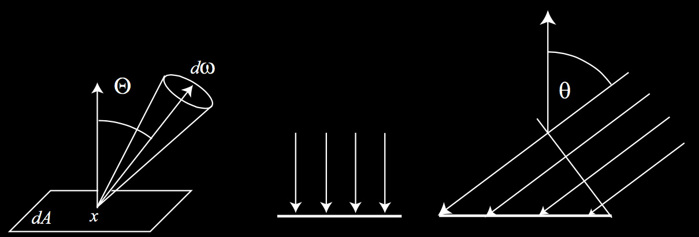

Radiometric Quantity Units 辐射量单位
2016-8-3
光子的波长 $$$ \lambda $$$、频率 $$$ \nu $$$（Hertz）、能量 $$$ Q $$$（Joules）之间的关系。
\[\begin{aligned} \nu &= { c \over \lambda } \\ \lambda &= { c \over \nu } \\ Q &= { h \nu } \end{aligned}\]
其中 $$$ c $$$ 是光速（$$$ 2.998 \times 10^8 \ meters/second $$$）,$$$ h $$$ 是 Planck 常数（$$$ 6.62620 \times 10^{-34} \ joule \cdot seconds $$$）
电磁辐射存在于一定范围的频率和能量内，从低频的无线电波到高频的 $$$ \gamma $$$ 射线。波长大约在 380 至 780 纳米之间的光子为人眼可感知的（可见光谱）。

Radiant Energy 辐射能量
在辐射度学（Radiometry）中，基础的单位是辐射能量 $$$ Q $$$，单位是 $$$ joules $$$。每个光子都有一定量的辐射能量，正比于频率。
Radiant Flux 辐射通量
辐射通量表示每秒发射的能量（$$$ dQ/dt $$$），单位是 $$$ joules/second $$$，或者是 $$$ watt $$$，符号为 $$$ \Phi $$$。
Irradiance 辐照度
辐照度表示单位面积上的光通量，单位是 $$$ watts/m^2 $$$。入射辐照度用 $$$ E $$$ 表示，出射辐照度（radiosity、radiant exitance）用 $$$ M $$$ 或者 $$$ B $$$ 表示。
\[ E = M = B = { d\Phi \over dA } \]
Radiance 辐射率
辐射率是单位面积单位立体角的光通量，单位是 $$$ watts / (m^2 \cdot steradian) $$$，用 $$$ L $$$ 表示。
\[ L = { d^2\Phi \over d\omega dA_{\perp} } = { d^2\Phi \over d\omega dAcos\theta } \]
